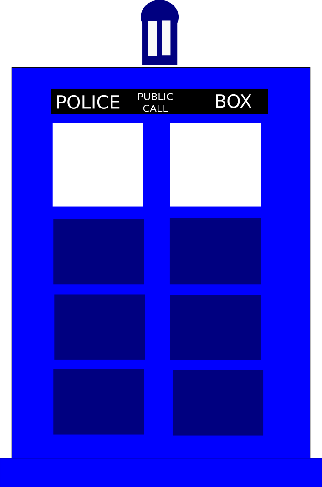

| Main Page | BriefStory | Actors | TARDIS |
Welcome to Doctor Who fan page
Doctor Who is a British cultic sci-fi series which continues more than 50 years.
It started with an idea which idea is making a TV show people can watch with
their families after football games.Today it has a worldwide fame and have fans
all over the world.
